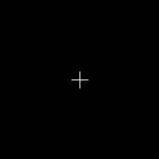

|
类型 |
生成 | ||||||||||||||||
|
描述 |
生成一个Marker标记轮廓 | ||||||||||||||||
|
语法 |
ZV_ContGenMarker(cont,x,y,type,size)
参数： cont：ZVOBJECT类型，生成的轮廓 x：标记的位置x坐标 y：标记的位置y坐标 type：标记类型，取值如下
size：标记大小，小于0取默认大小20 | ||||||||||||||||
|
适用控制器 |
支持ZV功能或者5系列以上的控制器 | ||||||||||||||||
|
例子 |
 ZVOBJECT cont,img ZV_ContGenMarker(cont,100,100,0,20) '位于(100,100),宽度为20个像素的十字型标记轮廓 TABLE(0) = 0 ZV_ImgGenConst(img,200,200,1,0,0) ZV_DraContour(img,cont,255) '绘制生成的轮廓 |